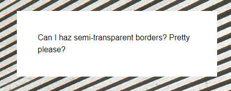

CSS揭秘笔记2
本节主要介绍一些背景和边框知识。
半透明边框
See the Pen Translucent borders -2 by XmoyKing (@xmoyking) on CodePen.
假设我们想给一个容器设置一层白色背景和一道半透明白色边框，body的背景会从它的半透明边框透上来。我们最开始的尝试可能是这样的：1
2border: 10px solid hsla(0,0%,100%,.5);
background: white;

除非你对背景和边框的工作原理有着非常好的理解，否则这个结果可能会令你摸不着头脑。我们的边框去哪儿了啊？而且如果我们连使用半透明颜色都不能实现半透明边框，那我们还有什么办法？！
尽管看起来并不像那么回事，但我们的边框其实是存在的。默认情况下，背景会延伸到边框所在的区域下层。这一点很容易验证，给一个有背景的元素应用一道老土的虚线边框，就可以看出来。即使你使用的是不透明的实色边框，这个事实也不会有任何改变。只不过在上面的例子中，这个特性完全打破了我们的设计意图。我们所做的事情并没有让 body 的背景从半透明白色边框处透上来，而是在半透明白色边框处透出了这个容器自己的纯白实色背景，这实际上得到的效果跟纯白实色的边框看起来完全一样。
在 CSS 2.1 中，这就是背景的工作原理。我们只能接受它并且向前看。谢天谢地，从背景与边框（第三版）（http://w3.org/TR/css3-background）开始，我们可以通过 background-clip 属性来调整上述默认行为所带来的不便。这个属性的初始值是 border-box ，意味着背景会被元素的 border box（边框的外沿框）裁切掉。如果不希望背景侵入边框所在的范围，我们要做的就是把它的值设为 padding-box ，这样浏览器就会用内边距的外沿来把背景裁切掉。
多重边框
box-shadow 方案
See the Pen Multiple borders by XmoyKing (@xmoyking) on CodePen.
目前为止，我们大多数人可能已经用过（或滥用过） box-shadow 来生成投影。不太为人所知的是，它还接受第四个参数（称作“扩张半径”），通过指定正值或负值，可以让投影面积加大或者减小。一个正值的扩张半径加上两个为零的偏移量以及为零的模糊值，得到的“投影”其实就像一道实线边框。1
2background: yellowgreen;
box-shadow: 0 0 0 10px #655;
这并没有什么了不起的，因为你完全可以用 border 属性来生成完全一样的边框效果。不过 box-shadow 的好处在于，它支持逗号分隔语法，我们可以创建任意数量的投影。因此，我们可以非常轻松地在上面的示例中再加上一道 deeppink 颜色的“边框”：1
2
3background: yellowgreen;
box-shadow: 0 0 0 10px #655,
0 0 0 15px deeppink;
唯一需要注意的是， box-shadow 是层层叠加的，第一层投影位于最顶层，依次类推。因此，你需要按此规律调整扩张半径。比如说，在前面的代码中，我们想在外圈再加一道 5px 的外框，那就需要指定扩张半径的值为15px （ 10px+5px ）。如果你愿意，甚至还可以在这些“边框”的底下再加一层常规的投影：1
2
3
4background: yellowgreen;
box-shadow: 0 0 0 10px #655,
0 0 0 15px deeppink,
0 2px 5px 15px rgba(0,0,0,.6);
多重投影解决方案在绝大多数场合都可以很好地工作，但有一些注意事项。
- 投影的行为跟边框不完全一致，因为它不会影响布局，而且也不会受到 box-sizing 属性的影响。不过，你还是可以通过内边距或外边距（这取决于投影是内嵌和还是外扩的）来额外模拟出边框所需要占据的空间。
- 上述方法所创建出的假“边框”出现在元素的外圈。它们并不会响应鼠标事件，比如悬停或点击。如果这一点非常重要，你可以给box-shadow 属性加上 inset 关键字，来使投影绘制在元素的内圈。请注意，此时你需要增加额外的内边距来腾出足够的空隙。
outline 方案
在某些情况下，你可能只需要两层边框，那就可以先设置一层常规边框，再加上 outline （描边）属性来产生外层的边框。这种方法的一大优点在于边框样式十分灵活，不像上面的 box-shadow 方案只能模拟实线边框（假设我们需要产生虚线边框效果， box-shadow 就没辙了）。如果要得到上面的效果，代码可以这样写：1
2
3background: yellowgreen;
border: 10px solid #655;
outline: 5px solid deeppink;
描边的另一个好处在于，你可以通过 outline-offset 属性来控制它跟元素边缘之间的间距，这个属性甚至可以接受负值。这对于某些效果来说非常有用。举个例子，下图就实现了简单的缝边效果。
这个方案同样也有一些需要注意的地方。
- 如上所述，它只适用于双层“边框”的场景，因为 outline 并不能接受用逗号分隔的多个值。如果我们需要获得更多层的边框，前一种方案就是我们唯一的选择了。
- 边框不一定会贴合 border-radius 属性产生的圆角，因此如果元素是圆角的，它的描边可能还是直角的（参见图 2-9）。请注意，这种行为被 CSS 工作组认为是一个 bug，因此未来可能会改为贴合 border-radius 圆角。
- 根据 CSS 基本 UI 特性（第三版）规范（http://w3.org/TR/css3-ui）所述，“描边可以不是矩形”。尽管在绝大多数情况下，描边都是矩形的，但如果你想使用这个方法，请切记：最好在不同浏览器中完整地测试最终效果。